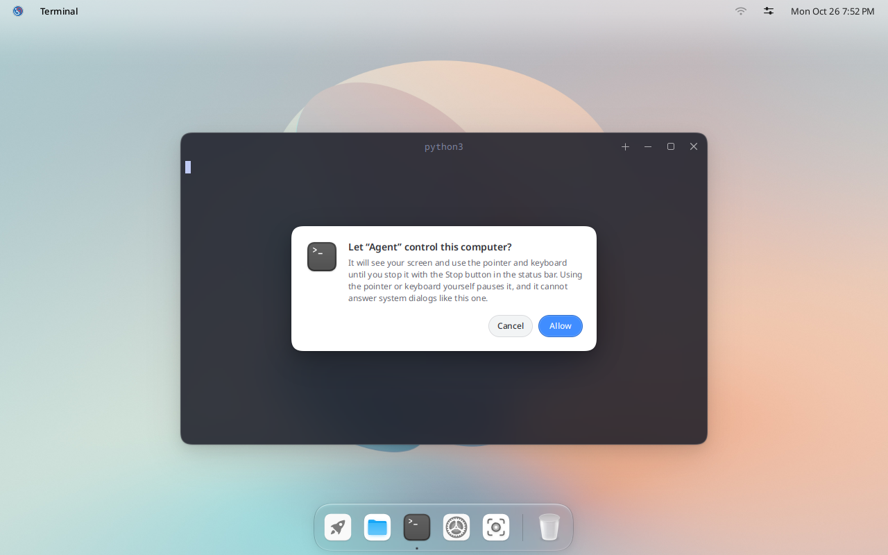
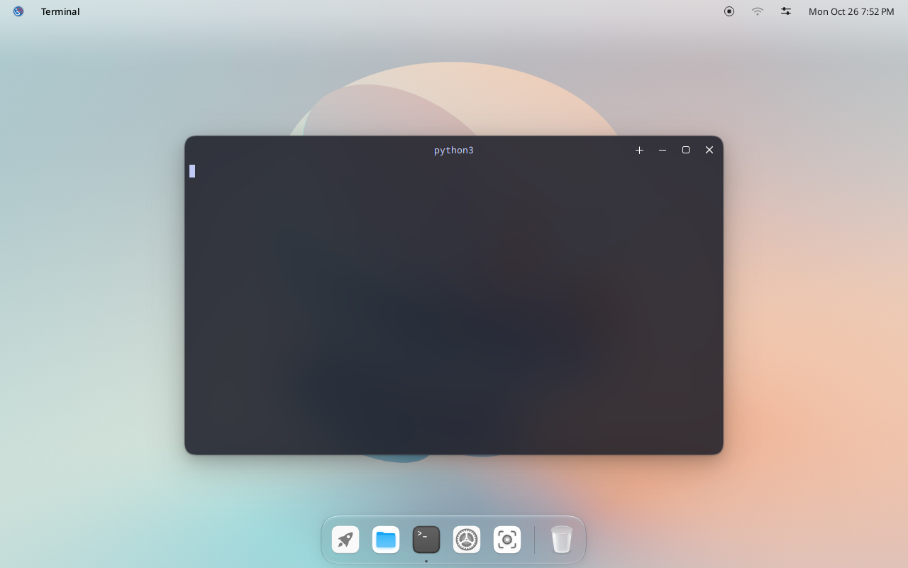

IGN 26 Docs
Bayu for agents
Bayu can let an AI agent see the screen and use the mouse and keyboard. It only happens after you allow it, and you can stop it with one click.
How it works
An agent app, such as Claude Code, talks to bayu-computer-use, a small program that speaks MCP (Model Context Protocol). When the agent first asks to see or touch the desktop, Bayu asks you:


Nothing happens until you click Allow. After that:
- A Stop button appears in the top bar while the agent is in control. Click it to stop the agent at once.
- When you use the mouse or keyboard yourself, the agent pauses.
- The agent cannot answer system dialogs, such as password prompts or this permission dialog.


Install bayu-computer-use
Install the build tools:
sudo dnf install cargo git
Download only this part of the Bayu source, and build it:
git clone --depth 1 --filter=blob:none --sparse https://github.com/igos-nusantara/bayu.git
cd bayu
git sparse-checkout set components/bayu-computer-use
cd components/bayu-computer-use
rm .cargo/config.toml
cargo build --release
sudo install -m 755 target/release/bayu-computer-use /usr/bin/
The rm line removes a setting meant for Debian builds. Without it, the build cannot download what it needs.
Then log out and sign in again (click the logo in the top-left corner, then Log out). Bayu looks for /usr/bin/bayu-computer-use when you sign in, and trusts only the program at that exact path.
Connect your agent
For Claude Code:
claude mcp add bayu -- /usr/bin/bayu-computer-use
For other agent apps, add an MCP server that runs /usr/bin/bayu-computer-use over stdio, with no arguments. Many apps use this format:
{ "mcpServers": { "bayu": { "command": "/usr/bin/bayu-computer-use" } } }
Start the agent app from the desktop, for example in Terminal. The permission dialog shows the agent's name and the app it runs in.
What the agent can do
These are the tools bayu-computer-use gives the agent:
| Tool | What it does |
|---|---|
screenshot | Captures the whole screen, or one window |
zoom | Shows one area of the screen at full resolution, to read small text |
click | Moves the pointer to a point and clicks |
move_pointer | Moves the pointer, for example to hover |
drag | Presses at one point, moves to another and releases |
mouse_down, mouse_up | Presses or releases a mouse button, for drags drag cannot do |
cursor_position | Tells where the pointer is |
scroll | Scrolls with the mouse wheel |
type_text | Types text where the keyboard focus is |
press_keys | Presses a key or shortcut, such as ctrl+s |
hold_keys | Holds a key down for a while |
set_clipboard | Puts text on the clipboard |
keyboard_shortcuts | Lists the system shortcuts |
list_windows | Lists open windows |
activate_window | Brings a window to the front |
close_window | Closes a window, like its close button |
set_window_frame | Moves and resizes a window |
list_applications | Lists installed apps |
open_application | Starts an installed app |
open | Opens a file, folder or web address |
actions | Runs several of these in a row |
If it does not work
If the agent reports This session does not let bayu-computer-use control the computer, the program is not where Bayu expects it, or you have not logged out and back in since you installed it. Check that /usr/bin/bayu-computer-use exists, then log out and sign in again.